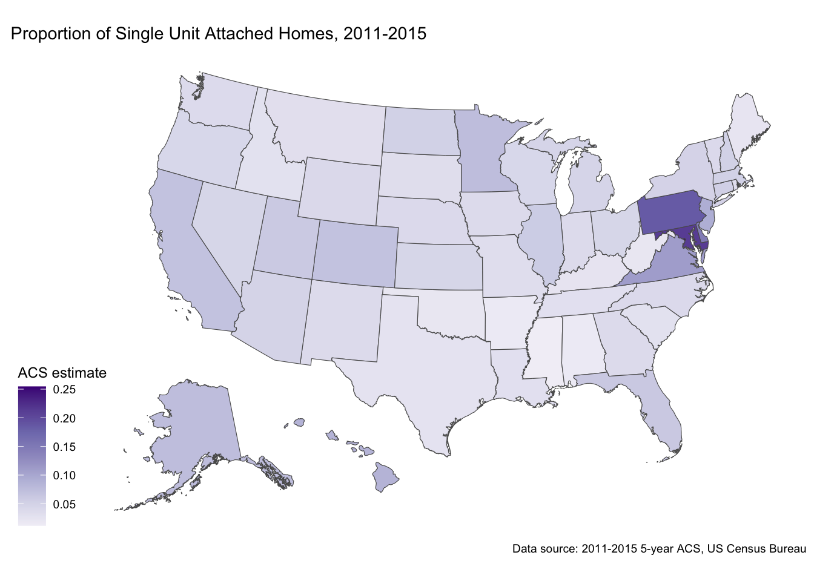
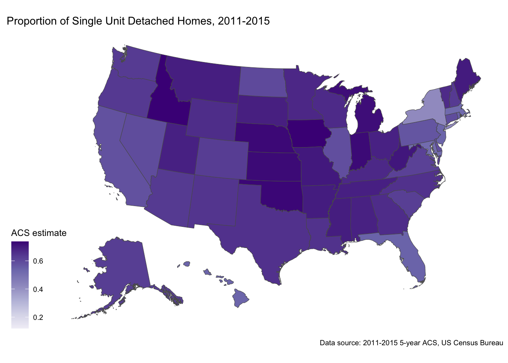
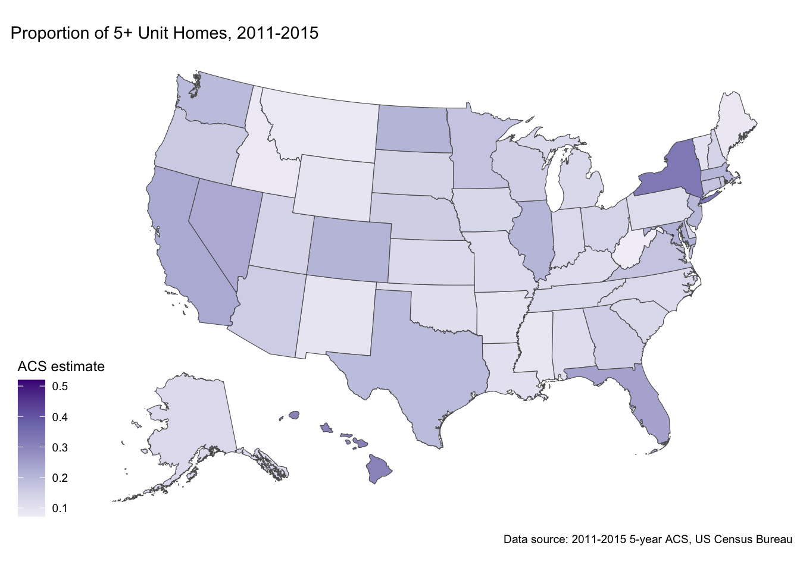
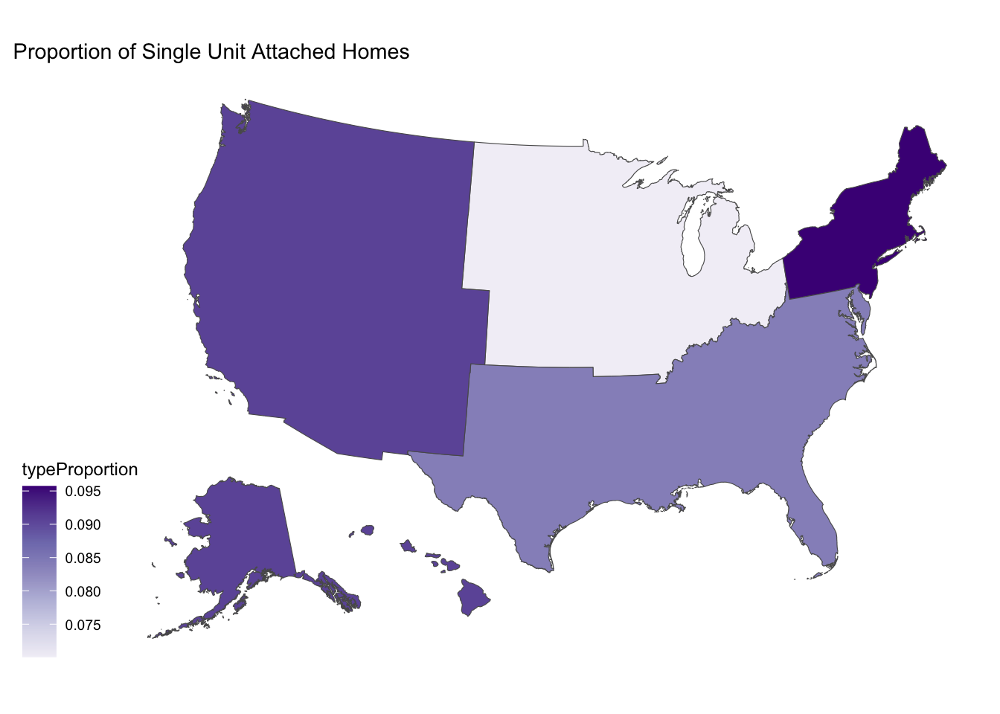
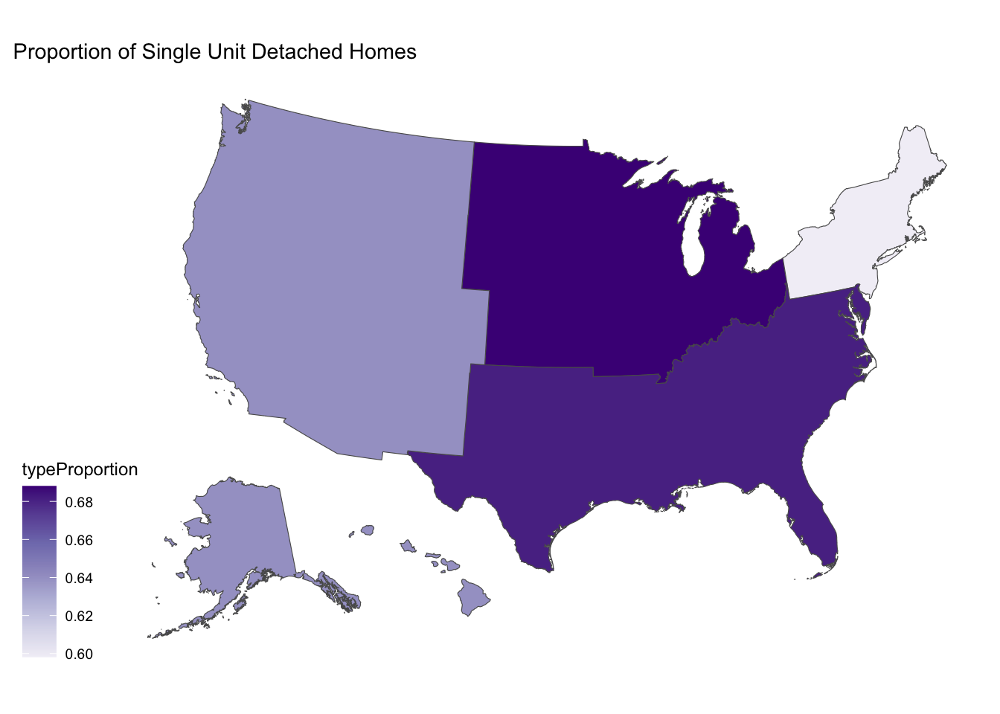
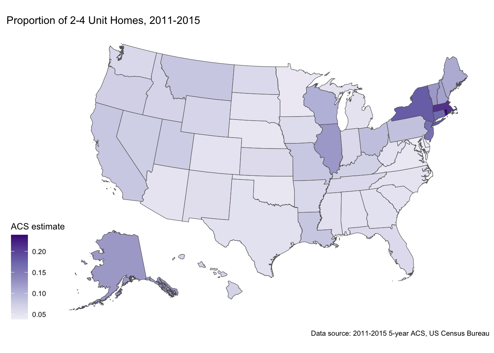
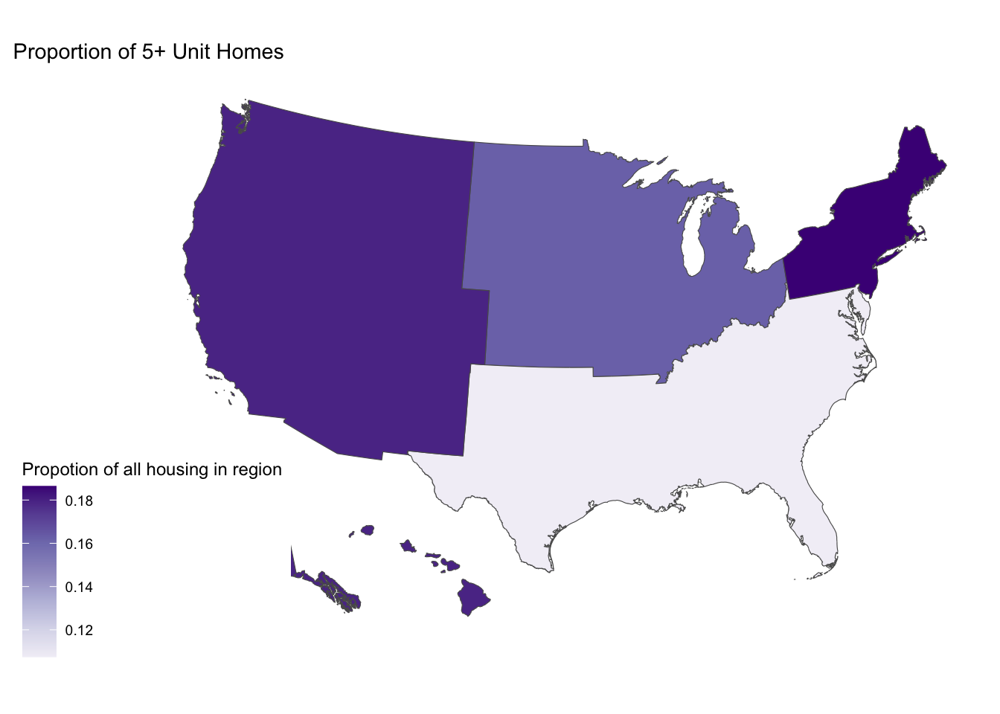
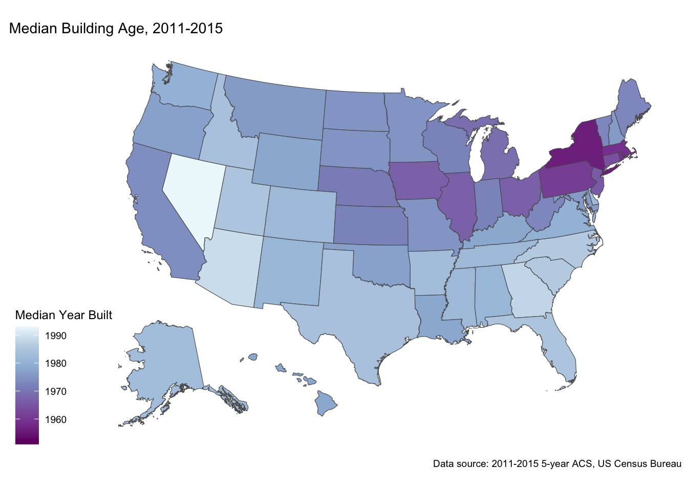

── Attaching core tidyverse packages ──────────────────────── tidyverse 2.0.0 ──
✔ dplyr 1.1.4 ✔ readr 2.1.5
✔ forcats 1.0.0 ✔ stringr 1.5.1
✔ ggplot2 3.4.4 ✔ tibble 3.2.1
✔ lubridate 1.9.3 ✔ tidyr 1.3.0
✔ purrr 1.0.2
── Conflicts ────────────────────────────────────────── tidyverse_conflicts() ──
✖ dplyr::filter() masks stats::filter()
✖ dplyr::lag() masks stats::lag()
ℹ Use the conflicted package (<http://conflicted.r-lib.org/>) to force all conflicts to become errors
Linking to GEOS 3.11.0, GDAL 3.5.3, PROJ 9.1.0; sf_use_s2() is TRUE
terra 1.7.65
Attaching package: 'terra'
The following object is masked from 'package:tidyr':
extract
To enable caching of data, set `options(tigris_use_cache = TRUE)`
in your R script or .Rprofile.
Attaching package: 'tigris'
The following object is masked from 'package:terra':
blocksBuilding Energy Spatial Viz
Getting data from the 2011-2015 5-year ACSWarning: • You have not set a Census API key. Users without a key are limited to 500
queries per day and may experience performance limitations.
ℹ For best results, get a Census API key at
http://api.census.gov/data/key_signup.html and then supply the key to the
`census_api_key()` function to use it throughout your tidycensus session.
This warning is displayed once per session.Downloading feature geometry from the Census website. To cache shapefiles for use in future sessions, set `options(tigris_use_cache = TRUE)`.
|
| | 0%
|
|= | 1%
|
|= | 2%
|
|== | 2%
|
|== | 3%
|
|=== | 4%
|
|=== | 5%
|
|==== | 5%
|
|==== | 6%
|
|===== | 6%
|
|===== | 7%
|
|====== | 8%
|
|====== | 9%
|
|======= | 9%
|
|======= | 10%
|
|======== | 11%
|
|======== | 12%
|
|========= | 12%
|
|========= | 13%
|
|========== | 14%
|
|========== | 15%
|
|=========== | 15%
|
|=========== | 16%
|
|============ | 17%
|
|============ | 18%
|
|=============== | 21%
|
|================ | 22%
|
|================ | 23%
|
|================= | 24%
|
|================== | 26%
|
|=================== | 27%
|
|==================== | 28%
|
|==================== | 29%
|
|===================== | 30%
|
|====================== | 31%
|
|======================= | 32%
|
|======================= | 33%
|
|======================== | 34%
|
|========================= | 35%
|
|========================= | 36%
|
|========================== | 37%
|
|=========================== | 39%
|
|============================== | 43%
|
|=============================== | 45%
|
|================================ | 46%
|
|=================================== | 50%
|
|=================================== | 51%
|
|==================================== | 52%
|
|===================================== | 54%
|
|======================================= | 56%
|
|======================================== | 57%
|
|========================================== | 59%
|
|========================================== | 60%
|
|=========================================== | 62%
|
|============================================ | 63%
|
|============================================== | 66%
|
|=============================================== | 67%
|
|================================================ | 69%
|
|================================================= | 70%
|
|================================================== | 71%
|
|=================================================== | 73%
|
|===================================================== | 75%
|
|====================================================== | 77%
|
|======================================================= | 78%
|
|======================================================= | 79%
|
|======================================================== | 79%
|
|======================================================== | 80%
|
|========================================================= | 82%
|
|========================================================== | 83%
|
|============================================================ | 86%
|
|============================================================= | 87%
|
|============================================================== | 88%
|
|======================================================================| 100%# ggplot() +
# geom_sf(data = acs2015, aes(fill = medContractRent)) +
# scale_fill_distiller(palette = "Greens",
# direction = 1) +
# labs(title = "Median Rent by State (Utilities Not Included), 2011-2015",
# caption = "Data source: 2011-2015 5-year ACS, US Census Bureau",
# fill = "ACS estimate") +
# ggthemes::theme_map()
#
# ggplot() +
# geom_sf(data = acs2015, aes(fill = medianHomeValue)) +
# scale_fill_distiller(palette = "Greens",
# direction = 1) +
# labs(title = "Median Home Value by State, 2011-2015",
# caption = "Data source: 2011-2015 5-year ACS, US Census Bureau",
# fill = "ACS estimate") +
# ggthemes::theme_map()
#
#
# ggplot() +
# geom_sf(data = acs2015, aes(fill = med_year_built)) +
# scale_fill_distiller(palette = "Greens",
# direction = 1) +
# labs(title = "Median Year House Was Built by State, 2011-2015",
# caption = "Data source: 2011-2015 5-year ACS, US Census Bureau",
# fill = "ACS estimate") +
# ggthemes::theme_map()
ggplot() +
geom_sf(data = acs2015_agg, aes(fill = unit_1_attached/total_units)) +
scale_fill_distiller(palette = "Purples",
direction = 1) +
labs(title = "Proportion of Single Unit Attached Homes, 2011-2015",
caption = "Data source: 2011-2015 5-year ACS, US Census Bureau",
fill = "ACS estimate") +
ggthemes::theme_map()
ggplot() +
geom_sf(data = acs2015_agg, aes(fill = unit_1_detached/total_units)) +
scale_fill_distiller(palette = "Purples",
direction = 1) +
labs(title = "Proportion of Single Unit Detached Homes, 2011-2015",
caption = "Data source: 2011-2015 5-year ACS, US Census Bureau",
fill = "ACS estimate") +
ggthemes::theme_map()ggplot() +
geom_sf(data = acs2015_agg, aes(fill = units_2_4/total_units)) +
scale_fill_distiller(palette = "Purples",
direction = 1) +
labs(title = "Proportion of 2-4 Unit Homes, 2011-2015",
caption = "Data source: 2011-2015 5-year ACS, US Census Bureau",
fill = "ACS estimate") +
ggthemes::theme_map()
ggplot() +
geom_sf(data = acs2015_agg, aes(fill = units_5_plus/total_units)) +
scale_fill_distiller(palette = "Purples",
direction = 1) +
labs(title = "Proportion of 5+ Unit Homes, 2011-2015",
caption = "Data source: 2011-2015 5-year ACS, US Census Bureau",
fill = "ACS estimate") +
ggthemes::theme_map()
recs <- readRDS("../data/recs_2015_cleaned.RDS")recs_housing_type <- recs %>%
count(region_name, housing_type)
region_means <- acs2015_agg_region %>%
group_by(region) %>%
select(-GEOID, -NAME) %>%
summarise_all(mean)Warning: There were 4 warnings in `summarise()`.
The first warning was:
ℹ In argument: `geometry = (new("standardGeneric", .Data = function (x, ...)
...`.
ℹ In group 1: `region = "Midwest"`.
Caused by warning in `mean.default()`:
! argument is not numeric or logical: returning NA
ℹ Run `dplyr::last_dplyr_warnings()` to see the 3 remaining warnings.region_geometry <- region_means %>%
select(region, geometry)
recs_housing_spatial <- region_geometry %>%
left_join(recs_housing_type, join_by(region == region_name)) %>%
group_by(region) %>%
mutate(totalHousing = sum(n),
typeProportion = n/totalHousing)recs_housing_spatial %>%
filter(housing_type == "Single family attached") %>%
ggplot() +
geom_sf(aes(fill = typeProportion)) +
scale_fill_distiller(palette = "Purples",
direction = 1) +
labs(title = "Proportion of Single Unit Attached Homes") +
ggthemes::theme_map()
recs_housing_spatial %>%
filter(housing_type == "Single family detached") %>%
ggplot() +
geom_sf(aes(fill = typeProportion)) +
scale_fill_distiller(palette = "Purples",
direction = 1) +
labs(title = "Proportion of Single Unit Detached Homes") +
ggthemes::theme_map()
recs_housing_spatial %>%
filter(housing_type == "Apt small building") %>%
ggplot() +
geom_sf(aes(fill = typeProportion)) +
scale_fill_distiller(palette = "Purples",
direction = 1) +
labs(title = "Proportion of 2-4 Unit Homes",
fill = "Propotion of all housing in region") +
ggthemes::theme_map()
recs_housing_spatial %>%
filter(housing_type == "Apt large building") %>%
ggplot() +
geom_sf(aes(fill = typeProportion)) +
scale_fill_distiller(palette = "Purples",
direction = 1) +
labs(title = "Proportion of 5+ Unit Homes",
fill = "Propotion of all housing in region") +
ggthemes::theme_map()
recs_temp <- recs %>%
count(region_name, elec_warm, elec_cool) %>%
mutate(
# elec = case_when(
# elec_cool =="Yes" & elec_warm == "Yes" ~ "Both",
# elec_cool =="No" & elec_warm == "Yes" ~ "Just Warming",
# elec_cool =="Yes" & elec_warm == "No" ~ "Just Cooling",
# elec_cool =="No" & elec_warm == "No" ~ "Neither"
# )
)
recs_aircon <-recs %>%
count(region_name, aircon) %>%
group_by(region_name) %>%
mutate(total = sum(n),
proportion_aircon = n/total) %>%
filter(aircon == "Yes")
recs_aircon_geom <- region_geometry %>%
left_join(recs_aircon, join_by(region == region_name))ggplot() +
geom_sf(data = recs_aircon_geom, aes(fill = proportion_aircon)) +
scale_fill_distiller(palette = "GnBu",
direction = 1) +
labs(title = "Proportion of Homes with Air Conditioning",
fill = "Propotion") +
ggthemes::theme_map()